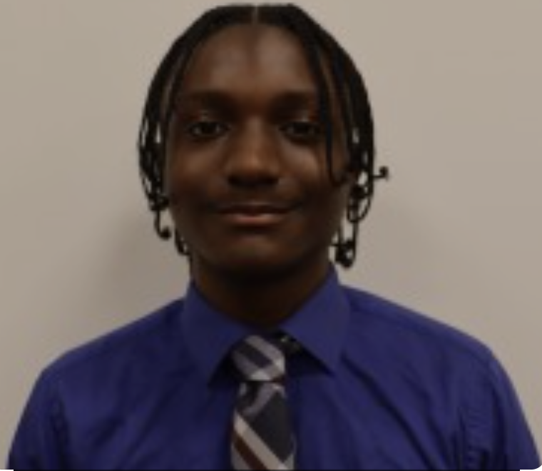

About Me
I’m currently pursuing a combined major in Data Science and Economics, combining a deep appreciation for numerical insight with a curiosity for human behaviour and decision-making. I believe that behind every dataset lies a story, and effective analysis is not just about numbers—it’s about translating patterns into actionable insights. Throughout my academic journey, I’ve engaged with projects that span from statistical modelling to economic forecasting, always asking: how can we use data to make rational, informed decisions that drive positive impact?
Outside the classroom, I enjoy sports mainly soccer. I enjoy music especially afrobeats, traveling and reading realistic fictional books.